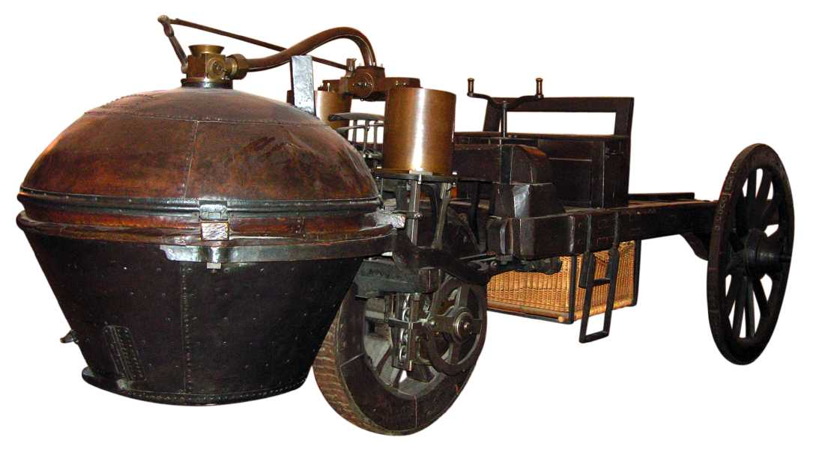

Первые замыслы и теоретические рассуждения были заложены Леонардо Да Винчи и Исааком Ньютоном.
Первый пароходный автомобиль
Первый бензиновый автомобиль

Первый электромобиль
|
Автомобиль, как мы знаем, был придуман не в один день и не одним изобретателем.
История автомобилестроения отражает эволюцию науки и техники.
Подсчитано, что на данный момент в мире действует более 100 000 патентов, посвященных современному автомобилю.
Тем не менее, мы укажем первые, самые важные шаги в автомобилестроении. Первые замыслы и теоретические рассуждения были заложены Леонардо Да Винчи и Исааком Ньютоном. |
 Первый пароходный автомобиль |
В 1769 году, первым, самоходно-дорожно-транспортным средством стал военный трактор. Его изобрел французский инженер и механик, Николя Иосиф Кугно Cugnot (1725 - 1804). Мсье Кюгно использовал паровой двигатель для движения своего автомобиля, построенного под его руководством в Париже на фабрике"Арсенал". |
|
Первый бензиновый автомобиль |
В 1885 году немецкий инженер-механик, Карл Бенц разработал и построил первый в мире автомобиль работающий с двигателем внутреннего сгорания. 29 Января 1886 года, Бенц получил первый патент (DRP№37435) для бензиновых автомобилей. | |
|
Первый электромобиль |
Между 1832 и 1839 (точный год не известен), Роберт Андерсон из Шотландии изобрел первую электрическую коляску. Электрические автомобили использовали аккумуляторные батареи, питающие небольшой электродвигатель. | |
| Автомобили были тяжелые, медленные, дорогие и требовали частой остановки для зарядки батарей. La Jamais Contente. Электрическая тяга добилась большего успеха в использовании трамваев и троллейбусов. Электрические транспортные средства по сей день используют на дорогах, где постоянная подача электроэнергии возможна, в угоду экологии и экономической выгоде.В остальном как паровые, так и электрические дорожно-транспортные средства на тот момент были неудобны. Это послужило скачком в конструировании двигателей автомобилей на основе бензинового топлива. | ||